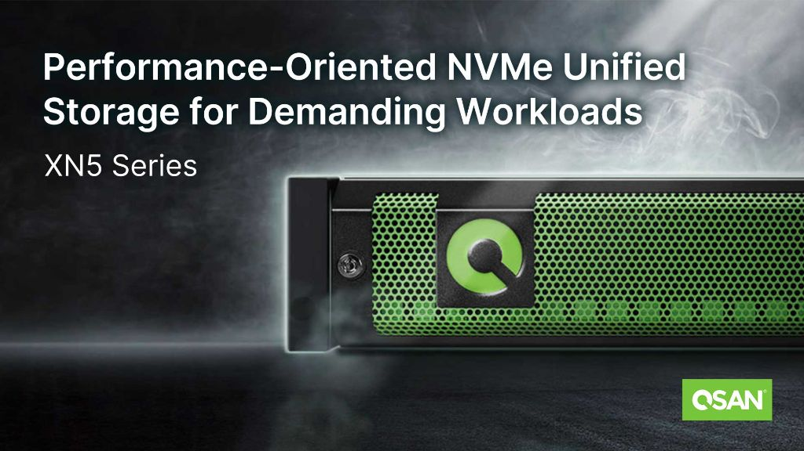

QSAN 공식 한국 총판 · IXIT Co., Ltd.
Enterprise Storage
Solutions
for AI & Business
AI 시대를 선도하는 엔터프라이즈 스토리지 전문기업 IXIT.
QSAN의 공식 한국 총판으로 최첨단 스토리지 솔루션과
전문 기술 지원을 제공합니다.
0+
도입 고객사
0년
스토리지 전문
0.9%
고객 만족도
0/7
기술 지원
32 GB/s
최대 처리 대역폭
99.9999%
가용성 (6-Nine)
4 PB
최대 확장 용량
32Gb FC
파이버채널 지원
스크롤